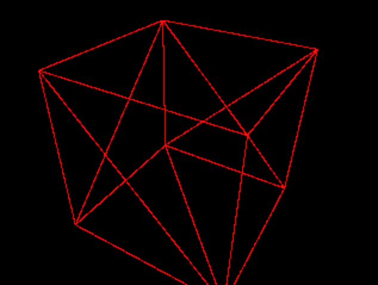
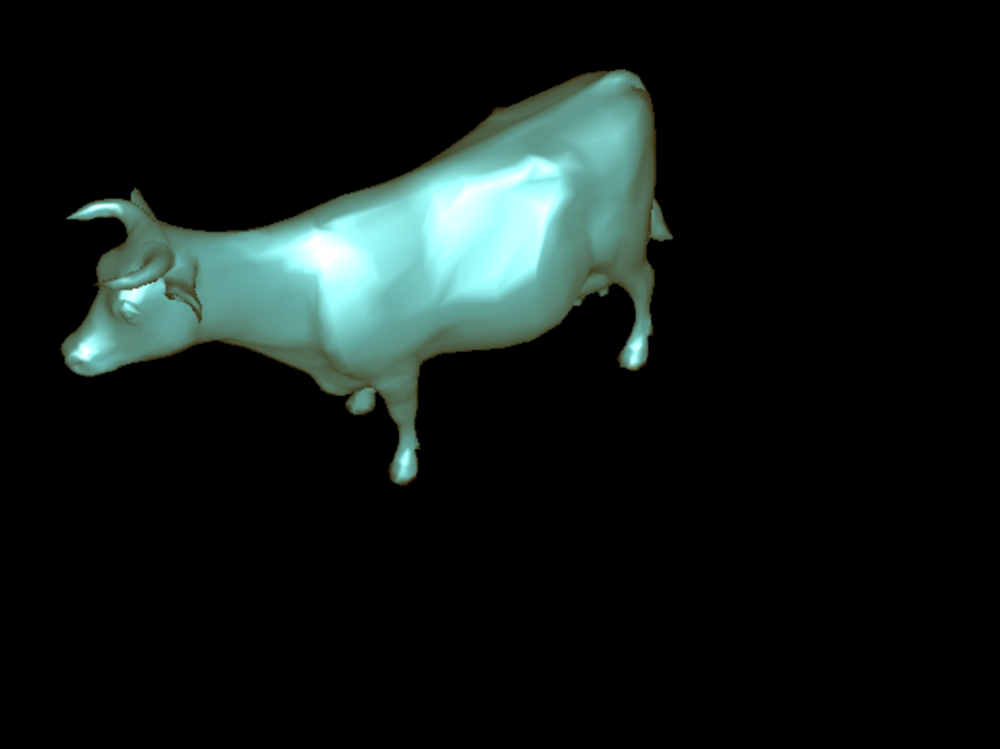
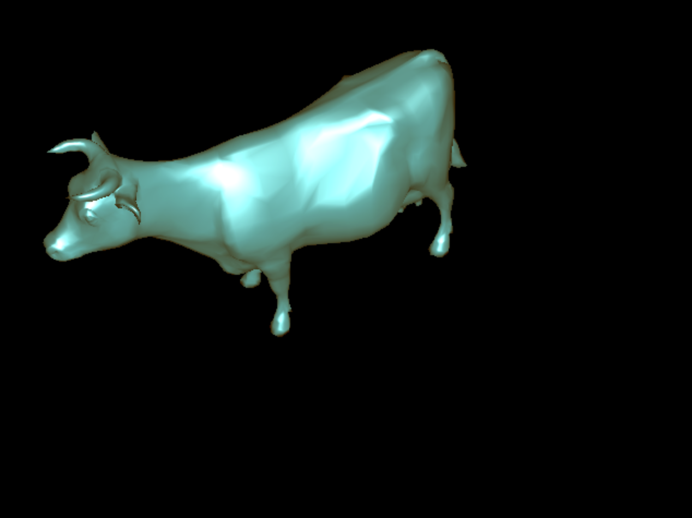
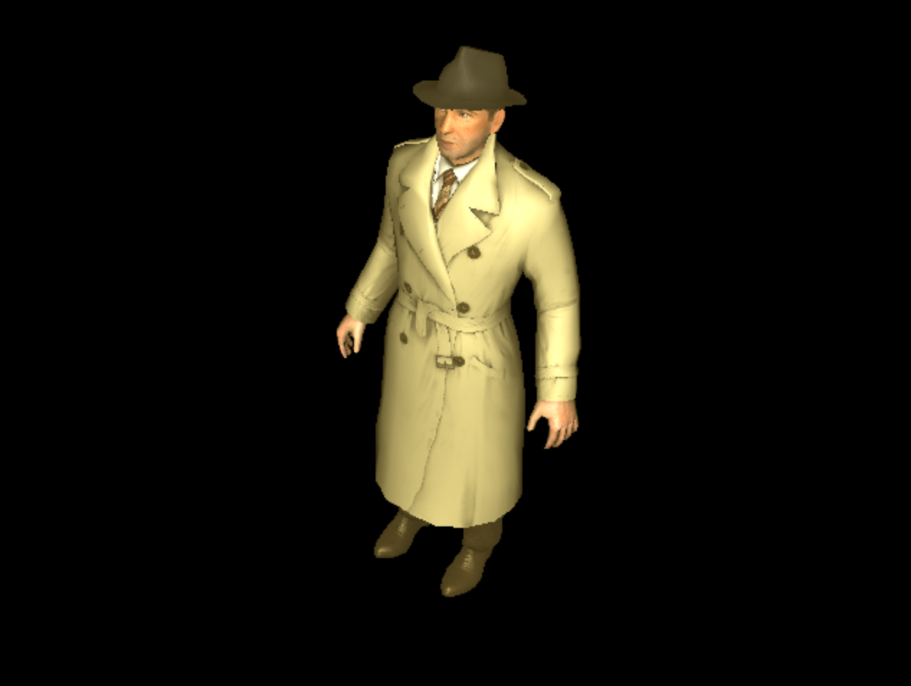
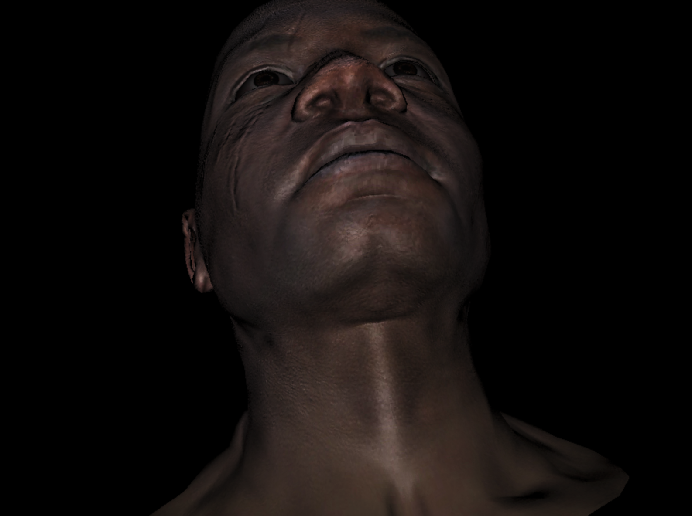

COS426 Assignment 4 — Rasterizer
Switch to: Interactive Renderer
that all images in this writeup were generated directly by my solution code or provided by the course staff (exception: art contest submissions may pass through intermediary software like GIMP)
that no other student has viewed my writeup explanations or my writeup images
that my solution code is my own work; particularly that my solution was not copied from any other student's solution code, and that no other student copied their solution directly code from me
that I did not discuss assignment specifics or view the solution code of any other student besides that of my (optional) partner
that I have followed all other course collaboration and course plagiarism policies as written on the course website.
Danica Truong (dtruong)
Collaborated with: Warren Quan (wquan)
Features Implemented:
- (2.0) Perspective Projection
- (1.0) Phong Reflection Model
- (1.0) Bounding Box
- (1.0) Barycentric Coordinates
- (2.0) Flat Shader
- (2.0) Gouraud Shader
- (2.0) Phong Shader
- (2.0) Diffuse and Specular Mapping
- (2.0) XYZ Normal Mapping
Perspective Projection
I went through each vertex's coordinates (3 since it is a triangle) and applied the projection matrix given. I divided by the "w" value to transform the 4D coordinates to 3D
coordinates. If the projected vertex was not in the bounds of canonical view, then I returned undefined since you wouldn't see it. Otherwise,
I scaled the projected vertex into screen coordinates and returned these values.
Camera=[2.8646,2.2455,1.5975];[0.47999,-0.82485,0.29873];[0,0,0]&Mesh=cube.obj;false&Resolution=320x240&Shading_Model=Wire&Ambient=[0,0,0]&Diffuse=[255,255,255]&Specular=[255,255,255]&Shininess=5

Phong Reflection Model
Ambient color was implemented by adding the phongMaterial.ambient to the exisitng color. To find the specular color, I followed the formula given for the last assignment (A3). I first found the reflected vector using the light vector and normal vector. Then I found the vector of the camera view by normalizing the view vector. The next step in the formula was to take the dot product of the negated view vector (since the camera view is flipped) and the reflection vector. We want to bound this value by 0 otherwise it would not be going towards the camera (viewer would not see). We take this value and put it to the power of the shininess value of the material. Finally, the specular value of the material is multiplied by this calculated value and added to the existing color.
Bounding Box
I found the bounding box values by comparing the respective projected vertex coordinate values and taking either the max or minimum of the set according to what was needed. I then bounded the max and min values by the screen size, since anything outside of those bounds are not seen.
Barycentric Coordinates
I followed the given formula for calculating Barycentric Coordinates. If the values found were less than 0, this means that the coordinate was outside the given triangle and should not be further calculated.
Flat Shader
I first found the normal of the surface by averaging the given vertex normals and found the face centroid by averaging the vertex coordinates. I then went through every pixel in the triangle by looping through the pixels within the bounding box of the triangle.
For each pixel in the bounding box, I found the its Barycentric coordinate within the triangle. If the barycentric coordinate did not exist, that meant that the pixel was not in the triangle and we should not calculate it's color any further.
I found the pixel's z coordinate by multiplying the projected vertices' z cooridnates by the barycentric cooridnates. If this z was closer than the buffered z, then I continued to render this pixel.
I interpolated the uv value using the barycentric cooridnates found and used this value to find the phong material of the pixel. I then found the color of the pixel by using the implemented function, phongReflectedModel.
I then rendered the pixel with the newly found color. Finally, I updated the z buffer at the pixel with the found z coordinate found.
Camera=[-3.7257,4.6729,1.6024];[-0.62123,-0.64694,0.4422];[0,0,0]&Mesh=cow.obj;false&Resolution=640x480&Shading_Model=Flat&Ambient=#483c14&Diffuse=#2d87ac&Specular=#a2c9d2&Shininess=5
Gouraud Shader
I first found each phong material for each uv value given. I then found each color that corresponded to each of those materials.
I then went through every pixel in the triangle by looping through the pixels within the bounding box of the triangle.
For each pixel in the bounding box, I found the its Barycentric coordinate within the triangle. If the barycentric coordinate did not exist, that meant that the pixel was not in the triangle and we should not calculate it's color any further.
I found the pixel's z coordinate by multiplying the projected vertices' z cooridnates by the barycentric cooridnates. If this z was closer than the buffered z, then I continued to render this pixel.
I interpolated the color values using the barycentric cooridnates found and used the sum of these colors to render the pixel.
Finally, I updated the z buffer at the pixel with the found z coordinate found.
Camera=[-3.7257,4.6729,1.6024];[-0.62123,-0.64694,0.4422];[0,0,0]&Mesh=cow.obj;false&Resolution=640x480&Shading_Model=Gouraud&Ambient=#483c14&Diffuse=#2d87ac&Specular=#a2c9d2&Shininess=5

Phong Shader
(Your description of your implementation of Phong Shader goes here...)
I first went through every pixel in the triangle by looping through the pixels within the bounding box of the triangle.
For each pixel in the bounding box, I found the its Barycentric coordinate within the triangle. If the barycentric coordinate did not exist, that meant that the pixel was not in the triangle and we should not calculate it's color any further.
I found the pixel's z coordinate by multiplying the projected vertices' z cooridnates by the barycentric cooridnates. If this z was closer than the buffered z, then I continued to render this pixel.
I then interpolated the normals of each vertex. To find the uv, I interpolated the given uvs. If there existed a an xyzNromal for the material, I found the RGB value at u, v for that material. I used these values to
update the face normal to equal the normal XYZ (which is the normalized values of 2*RGB - 1).
I then interpolated the vertexes by the barycentric coordinates and used this to find the face centroid value.
Next, I found the color of the pixel by using the implemented function, phongReflectedModel.
Using the newly found color, I rendered the pixel. Finally, I updated the z buffer at the pixel with the found z coordinate found.
Camera=[-3.7257,4.6729,1.6024];[-0.62123,-0.64694,0.4422];[0,0,0]&Mesh=cow.obj;false&Resolution=640x480&Shading_Model=Phong&Ambient=#483c14&Diffuse=#2d87ac&Specular=#a2c9d2&Shininess=5

Diffuse and Specular Mapping
For each shader, I checked if uv was no undefined, then interpolated the uv pixesl with the found barycentric coordinates. I used this value found to look up the phong material at the pixel.
Camera=[-1.1618,1.5919,2.0102];[-0.35231,-0.82205,0.44734];[0,0,0]&Mesh=boggiebody.obj;true&Mesh=boggieeyes.obj;true&Mesh=boggiehead.obj;true&Resolution=640x480&Shading_Model=Phong&Ambient=#483c14&Diffuse=#2d87ac&Specular=#a2c9d2&Shininess=5

XYZ Normal Mapping
In the phong shader:
If there existed a an xyzNromal for the material, I found the RGB value at u, v for that material. I used these values to
update the face normal to equal the normal XYZ (which is the normalized values of 2*RGB - 1).
Camera=[0.24217,-1.1267,1.6445];[0.10907,-0.81248,-0.5727];[0,0,0]&Mesh=afrhead.obj;true&Mesh=afreye.obj;true&Resolution=800x600&Shading_Model=Phong&Ambient=[0,0,0]&Diffuse=[255,255,255]&Specular=[255,255,255]&Shininess=5
